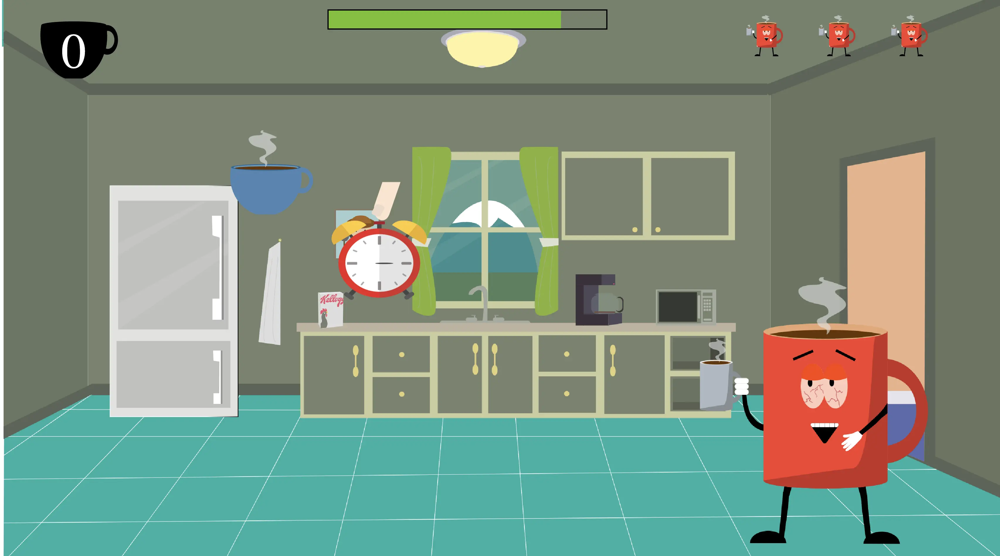
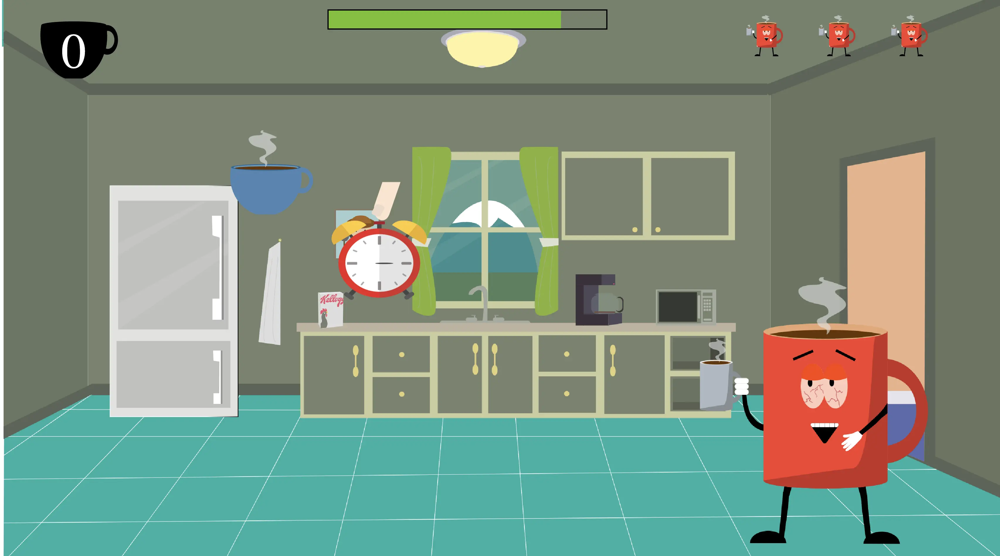

ANIMATION
Temabeskrivelse
I dette tema bliver vi gjort bekendte med kodesproget JavaScript, som vi sammen med CSS og HTML skulle bruge til at lave et simpelt spil. Før vi gik i gang med selve kodning skulle vi finde på en ide til vores spil. Til ideudviklingen lavede vi et mindmap og benyttede os af kryds-metoden, hvor vi skulle sætte tilfældige sætninger sammen for at komme frem til en ide. Vores ide skulle vi tegne i programmet Illustrator og eksportere i svg format, således vores elementer ikke blev pixeleret når de blev lavet større eller mindre, som det ville ske, hvis de blev gemt som fx. png fil.
Inspiration, stil og spil beskrivelse
Jeg er stor fan af animationsserien South Park, og valgte derfor at tage inspiration fra serien. South park er lavet i et 2D format, hvor det ligner at det er lavet i stopmotion/udklip. Jeg valgte derfor at tage deres stil og inkorporere det i mit spil. Min figur karakter tager udgangspunkt i South Park karakteren Towelie, men i stedet for et håndklæde der har for vane at ryge lidt for meget pot, har jeg lavet karakteren om til en morgentræt kaffekop.
Spil beskrivelse
Spillet har jeg valgt at kalde Mandags Spillet. Vi kender det alle, på en mandag morgen er det bare lidt sværere at komme i gang og ud af døren. I spillet går ud på at hjælpe Hr. kop ud af døren, ved at trykke på de faldende kaffekopper, hvis man derimod trykke på Snooze uret, mister man points, og hvis man trykker på sengen mister man et liv.
Diagrammer
Til vores spil skulle vi lave aktivitetsdiagram og state machine diagram. Et aktivitetsdiagram bruges til at beskrive interaktive systemer og de handlinger og beslutniger man tager i spillet (Actions and decisions). Et State machine diagram udfører handlinger som reaktion på eksplicitte hændelser, hvorimod aktivitetsdiagrammet ikke behøver eksplicitte hændelser.
MANDAGS SPIILLET